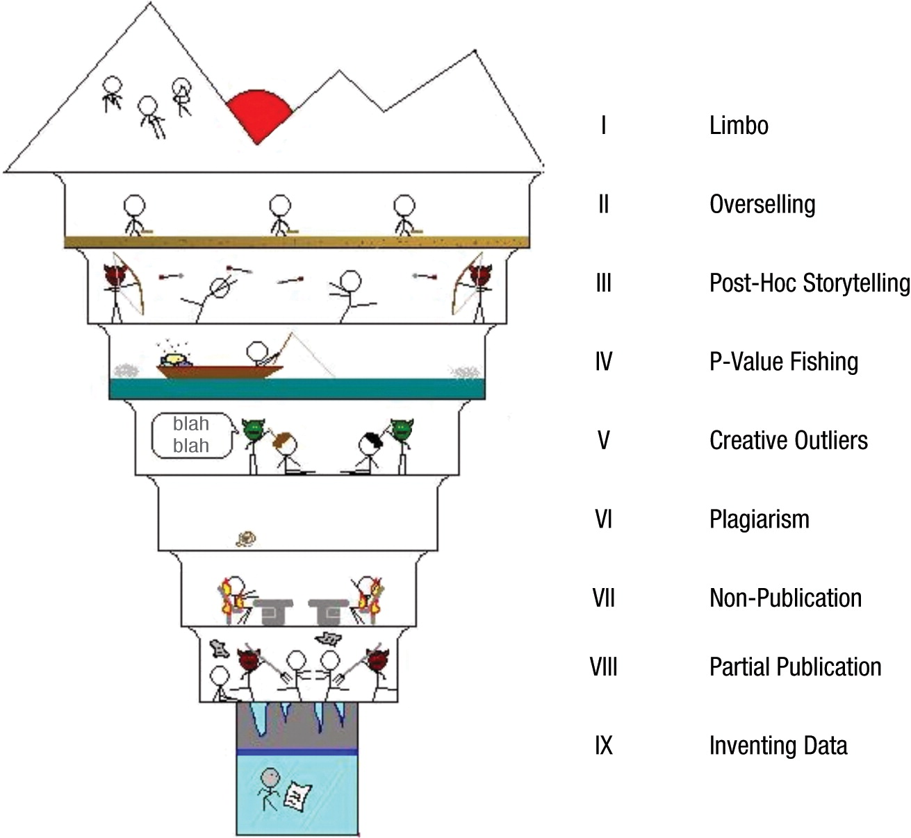

Strategi Publikasi & Latihan Menulis
Workshop Penerbitan Ilmiah untuk Mahasiswa Doktoral: Bagian 2️⃣
2026-04-17
Outline
- Strategi memilih jurnal yang tepat
- Integritas riset dan etika publikasi
- Manajemen data penelitian (research data management)
- Latihan menulis: scientific sell
- Sumber belajar lanjutan
Strategi memilih jurnal yang tepat
Prinsip dasar: kenali jurnal sebelum submit
- Membaca aims & scope jurnal dengan serius — bukan formalitas yang dilewati
- Telusuri artikel yang diterbitkan 2–3 tahun terakhir: apakah topik Anda relevan?
- Perhatikan gaya penulisan dan struktur naskah yang diterima di jurnal tersebut
- Cek author guidelines dengan cermat sebelum mulai menulis atau merevisi
- Satu naskah — satu jurnal pada satu waktu (no simultaneous submissions)
Warning
Penting: Submit ke jurnal yang scope-nya tidak cocok = hampir pasti desk reject. Editor bisa langsung melihat ini.
Empat “R” dalam memilih jurnal
- Relevance — apakah topik Anda benar-benar sesuai dengan scope jurnal?
- Reach — siapa pembaca jurnal tersebut? Apakah sesuai audiens yang Anda tuju?
- Reputation — bagaimana persepsi komunitas ilmiah terhadap jurnal ini? (bukan hanya impact factor)
- Realism — apakah naskah Anda kompetitif untuk jurnal tersebut?
Note
Bonus R: Resources
Berapa APC? Apakah ada fee waiver untuk peneliti dari negara berkembang? Cek dulu — banyak jurnal yang menyediakan waiver tapi tidak dipromosikan secara aktif.
Metrik bukan ukuran kualitas — hanya heuristik
- Impact Factor (JIF), quartile Scopus (Q1–Q4), dan h-index adalah metrik prestise — bukan ukuran kualitas artikel secara langsung
- Fungsi praktisnya: membantu seleksi awal target jurnal untuk keperluan PAK atau promosi jabatan
- Yang lebih penting untuk dijadikan dasar:
- Apakah komunitas yang Anda tuju membaca jurnal ini?
- Apakah jurnal ini menerbitkan artikel sejenis dengan naskah Anda?
- Berapa lama proses review-nya biasanya?
Note
Rekomendasi yang sering diberikan peneliti senior: *“Submit* di jurnal yang Anda sitir.” Jika jurnal tersebut sudah muncul di daftar pustaka Anda, berarti komunitas pembacanya memang relevan dengan topik riset Anda.
Pertimbangan proses editorial
Selain scope, perhatikan hal-hal ini sebelum memutuskan:
- Cakupan (scope): baca dengan cermat, jangan hanya mengandalkan nama jurnal
- Dewan editor (editorial board): apakah ada pakar di bidang Anda? Dari institusi terkemuka?
- Daftar pustaka Anda: submit where you cite — jurnal yang Anda sitir adalah komunitas yang relevan
- Open research policy: apakah jurnal mendukung pre-registration, open data, atau Registered Reports?
- Rekomendasi kolega/promotor: tanya kepada peneliti senior yang sudah berpengalaman submit ke jurnal tersebut
Hindari
…memilih jurnal hanya karena quartile-nya tinggi atau APC-nya terjangkau. Ketidakcocokan scope hampir selalu berakhir dengan desk reject.
Strategi khusus untuk review articles
- Scoping dan systematic review punya masih punya tempat di komunitas ilmiah — tapi kompetisi juga ketat
- Ada tren scoping dan systematic review lebih sulit diterbitkan karena ada lonjakan tipe artikel yang sama yang berasal dari paper mill
- Sebelum menulis, lakukan cek duplikasi: apakah review serupa sudah diterbitkan baru-baru ini?
- Jika ya → naskah Anda harus punya nilai tambah yang jelas
- Novelty bisa datang dari: populasi berbeda, konteks berbeda, periode lebih baru, metodologi lebih ketat
- Beberapa jurnal punya section khusus untuk review articles — prioritaskan ini
Tips
Daftarkan protokol review Anda di PROSPERO sebelum mulai pengumpulan data. Ini meningkatkan kredibilitas dan sangat diapresiasi oleh reviewer.
Faktor-faktor yang sering dilupakan
- Turnaround time: berapa lama biasanya dari submit hingga keputusan pertama?
- Cek di website jurnal atau tanya kolega yang pernah submit ke jurnal tersebut
- APC dan waiver: banyak jurnal OA bereputasi menyediakan waiver untuk penulis dari negara berpenghasilan menengah-bawah
- Selalu tanyakan waiver jika tersedia
- Submission charge: RED FLAG — jurnal bereputasi tidak meminta biaya sebelum peer-review
- Komunikasi editorial: apakah email selalu dijawab? Apakah ada kontak editorial yang jelas?
Cover letter — hal pertama yang editor baca
- Cover letter adalah kesan pertama — editor membacanya sebelum membuka naskah
- Cover letter yang baik berisi:
- Judul dan jenis artikel yang diajukan
- Pernyataan singkat tentang apa yang dilakukan dan mengapa relevan untuk jurnal tersebut
- Kontribusi utama dalam 2–3 kalimat — apa novelty-nya?
- Konfirmasi bahwa naskah tidak sedang disubmit ke jurnal lain (no simultaneous submission)
- Konfirmasi kelayakan etik (ethical clearance) jika relevan
- Sebutkan secara eksplisit mengapa naskah ini cocok untuk jurnal yang dituju
Sebenarnya
Editor tidak pernah membaca cover letter🙃 Fokuskan energi Anda untuk menyiapkan naskah. Cover letter dapat ditulis LLM.
Saat menerima review: jangan langsung dibalas
- Menerima review — apalagi yang keras — bisa memicu reaksi emosional yang wajar
- Tunggu 1–2 hari sebelum mulai merespons
- Baca semua komentar reviewer terlebih dahulu, baru mulai menyusun respons
- Identifikasi: mana yang valid, mana yang perlu klarifikasi, mana yang tidak Anda setujui
- Jangan pernah membalas dengan nada defensif atau emosional — bahkan jika reviewer keliru. Tunjukkan kekeliruan reviewer dengan bukti yang memadai.
- Ingat: reviewer menyumbangkan waktunya secara sukarela tanpa imbalan untuk membaca dan meninjau naskah kita
Merespons reviewer dengan baik
- Response to reviewers adalah keterampilan tersendiri yang harus dipelajari
- Prinsip dasar: copy-paste komentar reviewer, jawab, lalu kutip revisinya di naskah
- Tunjukkan dengan jelas di mana dan bagaimana Anda merespons
- Setiap komentar reviewer harus direspons — tidak ada yang boleh diabaikan
- Jika tidak setuju dengan reviewer: boleh, tapi wajib berikan argumen yang kuat dan berdasar
- Major revision bukan penolakan — ini kesempatan untuk memperbaiki naskah
- Berikut contoh response to reviewers yang paling panjang yang pernah saya tulis
- Contoh 1: Zein, R. A., Heene, M., & Gollwitzer, M. (2025). Stage 2 Registered Report: Measuring How Individuals Relate Science to Religion. The International Journal for the Psychology of Religion. https://doi.org/10.1080/10508619.2025.2535033.
- Contoh 2: Zein, R. A. & Akhtar, H. (2025). Getting Started with the Graded Response Model (GRM): An introduction and tutorial in R. International Journal of Psychology, 60(1), e13265. https://doi.org/10.1002/ijop.13265
Integritas riset dan etika publikasi
The nine circles of scientific hell
Dari yang “paling ringan” hingga paling berat:
- Limbo — tidak mempublikasikan hasil penelitian
- Overselling — mengklaim lebih dari yang didukung data
- Post-hoc storytelling — narasi yang dibuat post hoc setelah melihat data
- P-value fishing — mencari-cari p < .05 dengan berbagai cara
- Creative outliers — membuang data outlier tanpa justifikasi yang jelas

The nine circles of scientific hell
Dari yang “paling ringan” hingga paling berat:
- Plagiarism — menyalin tanpa atribusi yang benar
- Non-publication — sengaja menyembunyikan hasil negatif (publication bias)
- Partial publication — salami slicing
- Inventing data — fabrikasi atau falsifikasi data
Overselling
- Mengklaim lebih dari yang didukung data adalah misconduct yang paling umum — dan sering tidak disadari
- Contoh overselling dalam review articles:
- “Belum ada penelitian yang membahas ini” → padahal ada, hanya belum dibaca dengan cermat
- “Penelitian ini membuktikan bahwa X menyebabkan Y” → review bukan RCT, tidak bisa klaim kausalitas
- “Temuan ini akan mengubah cara pandang dunia” → terlalu berlebihan untuk diklaim
- Konsekuensi: berkontribusi pada replication crisis dan menyesatkan pembaca
Ingat
Perbedaan kecil dalam pilihan kata punya dampak besar. “Studi ini mengeksplorasi…” ≠ “Studi ini membuktikan…”
Hedging language yang tepat
| Hindari | Lebih baik |
|---|---|
| “membuktikan bahwa…” | “mengindikasikan bahwa…” / “konsisten dengan…” |
| “belum ada penelitian…” | “sejauh yang diketahui peneliti…” |
| “akan mengubah…” | “berpotensi berkontribusi pada…” |
| “semua…” | “sebagian besar partisipan dalam studi ini…” |
| “selalu terjadi…” | “cenderung terjadi dalam konteks…” |
Etika publikasi yang perlu diperhatikan
- Kepengarangan (authorship): hanya cantumkan nama yang benar-benar berkontribusi secara substansial
- Ghost authorship dan gift authorship adalah pelanggaran etika yang serius
- Plagiarisme: parafrase bukan menyalin. Setiap ide yang bukan milik Anda harus diatribusikan
- Ethical clearance: semakin banyak jurnal internasional mensyaratkan ini, bahkan untuk review articles (PRISMA-P)
- Meskipun ethical clearance sangat tergantung pada kebijakan institusi
- Peran promotor: supervisor memiliki tanggung jawab etik dalam proses publikasi mahasiswanya, bukan hanya formalitas pencantuman nama
- Umumnya, penelitian doktoral adalah penelitian mandiri yang dilakukan oleh mahasiswa, bukan penelitian kolaborasi dengan promotor/ko-promotor
- Diskusikan secara terbuka dengan promotor/ko-promotor tentang kontribusi dan peran masing-masing dalam penulisan artikel
- Jangan menambahkan nama promotor/ko-promotor tanpa persetujuan sebelumnya
Konteks lebih luas: krisis replikasi
- Studi besar (Many Labs 1, Open Science Collaboration 2015) menunjukkan: hanya ~36% klaim ilmiah di psikologi yang berhasil dicoba-ulang
- Studi terbaru (project SCORE, Tyner et al., 2026) menunjukkan bahwa lebih dari separuh (55.1%) klaim ilmiah yang diterbitkan di jurnal-jurnal ilmu sosial dan perilaku, dalam kurun waktu 2009-2018, dapat dicoba-ulang
- Penyebab utama: publication bias (hanya hasil positif yang diterbitkan), p-hacking, overselling, desain penelitian yang lemah
- Implikasinya untuk kita sebagai penulis review:
- Hati-hati dengan menarik kesimpulan dari satu studi
- Pertimbangkan kualitas metodologi studi yang Anda review, bukan hanya jumlahnya
- Prinsip open science (e.g., transparansi, kredibilitas, coba-ulang - replication, dan reka-ulang - reproducibility) saat ini merupakan tren global dan sudah menjadi norma baru
TUGAS 2️⃣: Scientific Sell (25 menit)
Tuliskan 1 paragraf (150–200 kata) yang menjawab:
- Mengapa topik riset Anda (yang sudah dibahas di Tugas 1️⃣) relevan secara ilmiah DAN praktis?
- Mengapa komunitas ilmiah dan/atau pembuat kebijakan perlu peduli dengan pertanyaan penelitian Anda?
- Apa yang belum diketahui yang ingin Anda ungkap?
- Tuliskan tugas Anda di halaman Padlet ini
Warning
Hindari ❌
- “Belum ada yang meneliti ini…”
- “Penelitian ini akan membuktikan…”
- Angka yang tidak ada sumbernya
- Klaim adanya efek sebelum data dikumpulkan/dianalisis
Note
Gunakan ✅
- Angka/fakta yang bisa diverifikasi
- Sitasi penelitian sebelumnya
- Hedging: “mengindikasikan…”, “cenderung…”, “dalam konteks…”
Open science untuk penulis review
- Daftarkan protokol review Anda di PROSPERO atau OSF sebelum pengumpulan data
- Laporkan proses selengkapnya — termasuk studi yang tidak memenuhi kriteria, dan mengapa
- Gunakan checklist PRISMA dengan jujur dan lengkap
- Bagikan data ekstraksi (data extraction sheets) jika memungkinkan — ini open data
- Laporkan heterogeneity dengan transparan, bukan hanya pooled estimate
Note
Praktik open science bukan hanya soal etika — ini juga meningkatkan peluang diterima di jurnal bereputasi tinggi yang semakin mensyaratkan transparansi.
Manajemen data penelitian
Apa itu research data management (RDM)?
- RDM adalah praktik terstruktur dalam mengorganisasi, mendokumentasikan, menyimpan, dan berbagi data penelitian sepanjang siklus hidupnya
- Untuk penulis review articles, “data” mencakup lebih dari sekadar angka:
- Search string dan strategi penelusuran yang digunakan
- Keputusan inklusi/eksklusi (screening decisions) di setiap tahap
- Extraction sheet — tabel ekstraksi data dari setiap studi yang dimasukkan
- PRISMA flow diagram beserta jumlah studi di setiap tahap
- Prinsip panduan: FAIR — data harus Findable, Accessible, Interoperable, Reusable
Note
RDM bukan hanya formalitas — data yang terdokumentasi dengan baik memungkinkan review Anda direplikasi, diperbarui, dan disitasi oleh peneliti lain.
Open data policy jurnal — apa yang perlu diketahui?
Tiga level kebijakan yang umum:
- Wajib (required) — data harus dideposit sebelum artikel diterbitkan
- Didorong (encouraged) — tidak wajib, tapi sangat disarankan dan diberi badge
- Tidak disyaratkan — masih umum di sebagian jurnal, tapi tren bergeser ke arah transparansi
Tempat deposit yang umum digunakan:
Warning
Penting: Sebelum submit, baca bagian data availability statement di author guidelines. Banyak jurnal Q1/Q2 kini mensyaratkan pernyataan ini — bahkan jika data tidak dapat dibagikan secara publik, alasannya harus dijelaskan secara eksplisit.
Note
Sharing data ekstraksi dan search string di OSF atau Zenodo tidak memerlukan biaya dan dapat dilakukan sebelum atau bersamaan dengan submission.
Sumber belajar lanjutan
Sumber belajar yang direkomendasikan
Gratis & online:
- Editage Insights — panduan praktis menulis dan mempublikasikan naskah
- Elsevier Researcher Academy — kursus terstruktur untuk peneliti
- COPE (Committee on Publication Ethics) — panduan etika publikasi
- PRISMA — checklist untuk systematic/scoping review
- PROSPERO — registrasi protokol systematic review
- OSF (Open Science Framework) — pre-registration dan open data
- DOAJ — cek legitimasi jurnal open access
- Scimago Journal Rank — cek quartile dan SJR jurnal
Tentang penggunaan LLM dalam menulis
- Large Language Model (LLM) seperti ChatGPT, Gemini, dan Claude kini umum digunakan, termasuk di komunitas akademik.
- LLM dapat membantu untuk:
- Memperbaiki tata bahasa dan gaya penulisan
- Mereformat sitasi dan daftar pustaka
- Menerjemahkan teks
- Mencari tema atau kode dalam data
- Namun: artikel ilmiah harus ditulis oleh penelitinya sendiri
- Isi, argumen, dan interpretasi adalah tanggung jawab penuh penulis
- Banyak jurnal kini mensyaratkan disclosure atas penggunaan AI
Warning
Penting: Menggunakan LLM untuk menulis naskah Anda secara keseluruhan, bukan hanya membantu perbaikan, dapat dikategorikan sebagai pelanggaran integritas akademik. Gunakan LLM dengan bijaksana dan laporkan secara transparan.
Ada pertanyaan❓

Note
- Paparan disusun dengan menggunakan Quarto dengan template dari UNAIR Theme.
- Kontak saya via amelia.zein@psikologi.unair.ac.id